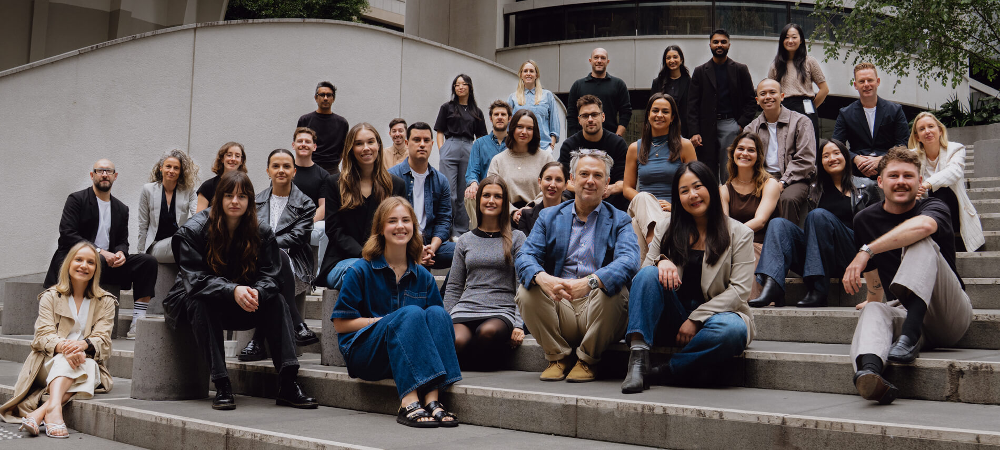

Sydney
Designing strategic change to move hearts and markets

Welcome to Sydney
Welcome to frog Sydney, where you'll find creative, curious and passionate thinkers who are ready to tackle any challenge. Let's work together to innovate and improve the world through collaboration and spirited fearlessness.
How we work
Accelerating Impact in Retail
We bring inventive strategies that help retailers strengthen customer connection, build D2C commerce and power sustainable transformation.
Delivering the Future of Financial Relationships
We help banks, insurers and investors build and orchestrate omnichannel offerings that respond to their customers' evolving expectations.
Reinventing Communication for a Connected Society
We use convergent design to help telecom operators and technology organizations capture the full potential of the intelligent, connected and digital world.


Sydney
Get in touch
Cookies settings were saved successfully!